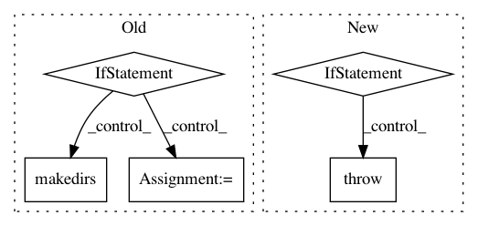

1e7ede5f3494e58e54fecd292c8c640ff2cc4720,ilastik/config.py,,init_ilastik_config,#Any#,85
Before Change
global cfg
cfg.read_string(default_config)
if userConfig is not None and not os.path.exists(userConfig):
raise Exception("ilastik config file does not exist: {}".format(userConfig))
// Move default config to the new location.
oldConfigPath = os.path.expanduser("~/.ilastikrc")
if userConfig is None and os.path.exists(oldConfigPath) and not os.path.exists(CONFIG_PATH):
os.makedirs(os.path.dirname(CONFIG_PATH), exist_ok=True)
shutil.move(oldConfigPath, CONFIG_PATH)
if userConfig is None:
userConfig = os.path.expanduser(CONFIG_PATH)
if os.path.exists(userConfig):
cfg.read(userConfig)
After Change
def init_ilastik_config(path: Union[None, str, bytes, os.PathLike] = None) -> None:
if path is None:
_init(_get_default_config_path())
elif os.path.isfile(path):
_init(path)
else:
raise RuntimeError(f"ilastik config file {path} does not exist or is not a file")
init_ilastik_config()
In pattern: SUPERPATTERN
Frequency: 4
Non-data size: 5
Instances
Project Name: ilastik/ilastik
Commit Name: 1e7ede5f3494e58e54fecd292c8c640ff2cc4720
Time: 2020-10-08
Author: emilmelnikov@gmail.com
File Name: ilastik/config.py
Class Name:
Method Name: init_ilastik_config
Project Name: NeuroTechX/moabb
Commit Name: 66b0061685aa10d124ef89c9a2f5ddeb7ce1ea1b
Time: 2018-01-24
Author: vjayaram@danube.is.localnet
File Name: moabb/datasets/download.py
Class Name:
Method Name: data_path
Project Name: google/deepvariant
Commit Name: e1aca5875121ef15bdb07243af56eb704d79c794
Time: 2019-12-05
Author: pichuan@google.com
File Name: deepvariant/model_train.py
Class Name:
Method Name: run
Project Name: sassoftware/python-dlpy
Commit Name: 4e82f2a7d39136c2246800090e671c5b3fb978b6
Time: 2019-08-28
Author: ethem.can@sas.com
File Name: dlpy/network.py
Class Name: Network
Method Name: save_to_astore